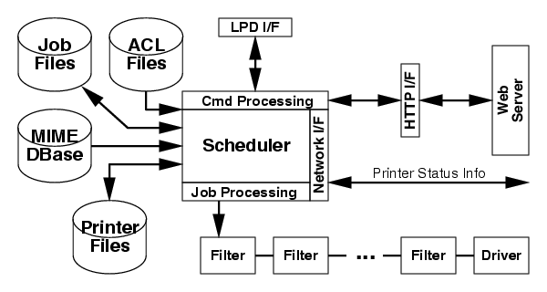

|
An Overview of the
Common UNIX Printing System
August 10, 1998
Michael Sweet, Easy Software Products
Copyright 1998, All Rights Reserved.
|
This whitepaper describes the Common UNIX Printing
SystemTM ("CUPSTM"), a portable and extensible
printing system for UNIX®. CUPS is being developed by
Easy Software Products, a small business located in Hollywood, Maryland
that has been selling commercial software for Silicon
Graphics®, Sun®, and HP workstations
since 1993 through more than 30 distributors serving over 80 countries
worldwide.
Additional information on CUPS is available on the World Wide Web at
"http://www.cups.org".
Background
Printing within UNIX has historically been done using one of two printing
systems - the Berkeley Line Printer Daemon ("LPD") [RFC1179] and the AT&T
Line Printer system. Replacements for these printing systems have emerged
[LPRng, Palladin, PLP], however none of the replacements change the fundamental
capabilities of these systems.
Over the last few years several attempts at developing a standard printing
interface have been made, including the draft POSIX Printing standard [IEEE-1387.4,
last updated in 1994] and Internet Printing Protocol [IETF-IPP]. The POSIX
printing standard defines a common set of command-line tools as well as
a C interface for printer administration and print jobs. The Internet Printing
Protocol defines extensions to the HyperText Transport Protocol 1.1 [RFC2068]
to provide support for remote printing services.
Weaknesses in Existing Printing Systems
After five years of developing printer drivers for UNIX operating systems,
Easy Software Products has identified several major weaknesses in the printing
systems currently in use:
- Users must print text or Adobe®
PostScriptTM files; other formats may be
supported, but not universally
- Lack of a standard command-line interface; each operating
system and driver package provides different command-line
options, e.g. setting the media size with one driver may
involve passing a single option ("letter") while another
requires two ("mediasize letter")
- Lack of a standard application interface; most UNIX
applications either do not provide an interface for sending
printer options, or restrict the options to those in printer
description files supplied with the application
- Remote printing problems; no vendor seems to use the same
remote printing protocol (many use an "enhanced" version of the
LPD protocol with vendor-specific extensions)
- Client printer administration hassles; most vendors
require that you install remote printers on each client by
hand, and many do not even provide the ability to browse
printers on the "server" system
- Drivers typically are hardcoded to handle printing to
parallel or serial printers; support for other types of
interfaces or networking protocols requires that a driver be
rewritten to support them
- Security, accounting, and quotas; most printing systems do
not support access control lists ("ACLs"), and printer
accounting and quotas are not well supported, if at all
Goals of CUPS
The basic goals of CUPS are:
- Provide mandatory support for text (US ASCII and the
default local encoding, e.g. ISO-8859-1), Adobe PostScript,
PDF, HPGL/2, TIFF, JPEG, PNG, PBM, PGM, and PPM files
- Provide a standard command-line interface with a mandatory
minimum set of options (media size and so forth)
- Provide a standard application interface; this will be the
POSIX interface with extensions to support the mandatory
standard options (GUI)
- Provide a common remote printing interface (IPP)
- Provide a printer browsing interface and allow users to
print to remote printers using a "printer@server" notation
rather than adding the printer locally
- Provide a scheduler extension interface to support
different interfaces separate from the printer driver (e.g.
serial, parallel, lpd, tftp, ipp, etc.)
- Provide a standard interface for ACLs, quotas, accounting,
and logging
Design Overview
Like most printing systems, CUPS is designed around a central print scheduler
process that handles dispatching print jobs, processing administrative
commands, providing printer status information to local and remote programs,
and informing users as needed. Figure 1 shows the basic organization of
CUPS.

Figure 1 - CUPS Block Diagram
Scheduler
The scheduler is a multi-threaded application that starts a new thread
for each connection that is received. The "native" scheduler protocol
provides one-shot connections to send a single command message to the
scheduler and receive a single response from the scheduler. A web
server extension provides HTTP/1.1 protocol support for remote printing
as defined by the IPP standard. Access to all functions (add a printer,
set the default printer, send a job, etc.) can be controlled via access
control lists (ACLs), allowing an administrator to give specific
priviledges to each user as needed. The scheduler status and
administration tasks can be performed using a standard web browser.
Job Files
Job files consist of a control file describing the options and files for
a job and the print files themselves. Each job can be assigned a priority
(the priority setting option is controlled via ACL) to ensure that printing
occurs in a timely fashion or simply whenever possible.
ACL Files
ACL files describe global access limits for users, groups, and systems.
The default ACL configuration is to limit all configuration and job control
commands to local access from the root user and allow any user, group,
or system to submit and query print jobs.
MIME DBase (Database)
The scheduler reads Multimedia Internet Mail Extension ("MIME") [RFC2046]
type and conversion files and builds a connection database that is used
to convert incoming print files to the correct output format. The MIME
types file is similar in format to the existing "mime.types" files used
by many applications with the addition of "magic" file typing rules for
determining file types based on content rather than by extension.
The MIME conversion files define input and output types (e.g. image/*,
application/postscript), a cost associated with the conversion from 0 to
100, and the name of the filter command to execute. There is a common "system"
conversion file and a conversion file for each printer (printer dependent
filters).
Printer Files
Printer files provide configuration information for each printer
(output driver, etc), a printer description file, the current printer
status, ACLs, log entries made by the driver or filters, and an
accounting file listing each page that is printed, the options used,
the time of the job, the job ID and title, and the user that printed
the job.
Cmd (Command) Processing
The command processing portion of the scheduler handles job and configuration
commands from a CUPS client.
Job Processing
The job processing portion of the scheduler dispatches print jobs when
printers are available. Each job will have a variable number of
conversion filters associated with it (e.g. image files converted to
PostScript, PostScript job filtering, etc.) For printers using
"classic" System V style interface scripts, the interface script is
used as the only filter before the driver.
Network I/F (Interface)
The Network interface receives and sends broadcast printer status and
availability information to allow users to browse the network for
printers and check on the current printer status.
The printer status information is normally sent and received on port
80 but can be changed if desired. This must be done on all hosts or
browsing will not work.
Filters
A filter program reads from the standard input or from a file if a
filename is supplied. All filters must support a common set of options
including printer name, job ID, username, job title, number of copies,
and job options. All output is sent to the standard output.
Drivers
A driver program is a special filter that writes incoming data to a
device or network connection. Drivers will be supplied for serial,
parallel, SCSI, LPD, TFTP, FTP, HTTP, SMB, and AppSocket (JetDirect)
connections.
HTTP I/F (Interface)
The HTTP interface provides the IPP extension support for a web server
which provides remote printing support for CUPS and other IPP-capable
clients.
LPD I/F (Interface)
The LPD interface provides the incoming Line Printer Daemon support for
the scheduler which provides remote printing support for LPD-capable
clients.
The Command-Line Interface
CUPS provides the System V, Berkeley, and POSIX command-line interfaces for
submitting jobs and checking the printer status. The "lpstat" and "lpc
status" commands will also show network printers ("printer@hostname") when
printer browsing is enabled.
The System V and POSIX printer administation commands are supplied for
adding, modifying, and deleting printers local to the system. The Berkeley
printer administration tool ("lpc") is only supported in a "read-only"
mode to check the current status of the printer queues and scheduler.
Graphical User-Interface
CUPS provides a FLTK-based printer management and job management GUI.
"Wizards" are used for adding printers and troubleshooting.
The Application Interface
CUPS provides the POSIX printing interface to applications. The CUPS
library provides all of the job and printer control functions, but
actual use is limited as defined by the scheduler and printer ACLs.
The libraries are written to support operation on systems with and without
CUPS so that developers can use the libraries on all systems.
The World Wide Web Interface
CUPS provides a simple CGI-based WWW interface through a local web
server. This interface allows users to check on the status of printers
and jobs.
Remote Printing
Remote printing is available automatically for CUPS-based systems
through the printer browse table maintained by the scheduler. Users can
send jobs to a specific printer and server by specifying a destination
of "printer@hostname". For remote printers using a different protocol
(e.g. LPD, SMB, etc.) a local queue must be created.
Summary
The Common UNIX Printing System provides a modern printing interface
for UNIX applications that is both flexible and user-friendly. The
software provides System V and Berkeley compatible command-line
interfaces to ensure compatibility with existing applications.
The application interface libraries give developers an easy-to-use
interface to printers and the printer system while maintaining
compatibility with legacy printing systems that are still in use. It
also provides printer specific information (supported media sizes,
etc.) that is not otherwise available without special programming.
Availability
CUPS source code is available free for individuals, educational institutions,
and not-for-profit companies. CUPS will be available for commercial licensing
in September of 1998.
References
IEEE-1387.4
System Administration - Part 4: Printing Interfaces (draft)
IETF-IPP
Internet Printing Protocol (draft)
LPRng
An enhanced, extended, and portable implementation of the Berkeley LPR
print spooler functionality
Palladin
A printing system developed at the Massachussetts Institute of Technology
PLP
The Portable Line Printer spooler system
RFC1179
Line Printer Daemon Protocol
RFC2046
Multipurpose Internet Mail Extensions (MIME) Part Two: Media Types
RFC2068
Hypertext Transfer Protocol -- HTTP/1.1
Trademarks
The Common UNIX Printing System, CUPS, and the CUPS logo are trademarks
of Easy Software Products. All other trademarks are the property of
their respective owners.